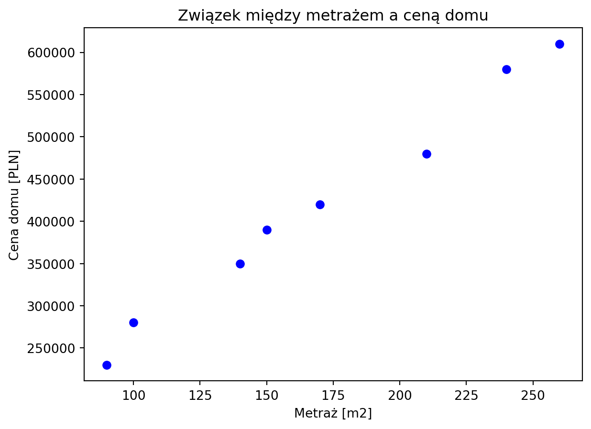
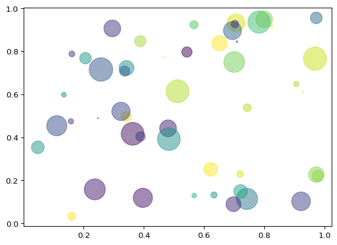

Wykres punktowy (scatter plot) jest stosowany, gdy chcemy przedstawić związek między dwiema zmiennymi lub rozkład punktów danych w przestrzeni dwuwymiarowej. Wykres punktowy jest odpowiedni dla danych zarówno ciągłych, jak i dyskretnych, gdy chcemy zobrazować wzory, korelację lub związki między zmiennymi.
Oto niektóre sytuacje, w których wykresy punktowe są stosowane:
Analiza korelacji między dwiema zmiennymi, na przykład związek między wiekiem a dochodem.
Prezentowanie rozkładu punktów danych, na przykład wykazanie geograficznego rozmieszczenia sklepów w mieście.
Eksploracja danych, aby zrozumieć strukturę danych i znaleźć wzorce, grupy lub anomalie, na przykład w celu identyfikacji skupisk danych w analizie skupień (clustering).
Wykrywanie wartości odstających (outliers) w danych, na przykład dla wykrywania nietypowych obserwacji w zbiorze danych.
Porównywanie różnych grup lub kategorii danych, na przykład porównanie wzrostu gospodarczego różnych krajów względem ich długu publicznego.
Wykresy punktowe są szczególnie przydatne, gdy mamy do czynienia z danymi o różnym charakterze (ciągłe lub dyskretne) oraz gdy chcemy zbadać korelację, grupy, wzorce lub wartości odstające.
plt.plot([1, 2, 3, 4], [10, 20, 25, 30], color='lightblue', linewidth=3) - Tworzy wykres liniowy z podanymi współrzędnymi punktów (1, 10), (2, 20), (3, 25) i (4, 30). Kolor linii to jasnoniebieski (lightblue), a jej grubość wynosi 3.
2
plt.scatter([0.3, 3.8, 1.2, 2.5], [11, 25, 9, 26], color='darkgreen', marker='^') - Tworzy wykres punktowy z podanymi współrzędnymi punktów (0.3, 11), (3.8, 25), (1.2, 9) i (2.5, 26). - Kolor punktów to ciemnozielony (darkgreen), a ich kształt to trójkąty wypełnione w górę (^).
3
plt.xlim(0.5, 4.5) - Ustala zakres wartości na osi X, zaczynając od 0.5 do 4.5.
import matplotlib.pyplot as plthouse_prices = [230000, 350000, 480000, 280000, 420000, 610000, 390000, 580000]square_meters = [90, 140, 210, 100, 170, 260, 150, 240]1plt.scatter(square_meters, house_prices, color='blue', marker='o')plt.xlabel('Metraż [m2]')plt.ylabel('Cena domu [PLN]')plt.title('Związek między metrażem a ceną domu')plt.show(block=True)
1
plt.scatter(square_meters, house_prices, color='blue', marker='o'): tworzy wykres punktowy (scatter plot) z metrażem domów na osi X (square_meters) i cenami domów na osi Y (house_prices). Punkty są koloru niebieskiego (color='blue') i mają kształt kółka (marker='o').

import matplotlib.pyplot as pltfig, ax = plt.subplots()house_prices = [230000, 350000, 480000, 280000, 420000, 610000, 390000, 580000]square_meters = [90, 140, 210, 100, 170, 260, 150, 240]ax.scatter(square_meters, house_prices, color='blue', marker='o')ax.set_xlabel('Metraż [m2]')ax.set_ylabel('Cena domu [PLN]')ax.set_title('Związek między metrażem a ceną domu')plt.show()

from matplotlib import pyplot as pltx = [1, -3, 4, 5, 6]y = [2, 6, -4, 1, 2]area = [70, 60, 1, 50, 2]1plt.scatter(x, y, marker=">", color="brown", alpha=0.5, s=area)plt.show(block=True)
1
Kod plt.scatter(x, y, marker=">", color="brown", alpha=0.5, s=area) tworzy wykres punktowy (scatter plot) x: lista lub tablica współrzędnych x punktów na wykresie. y: lista lub tablica współrzędnych y punktów na wykresie. Wartości x i y muszą mieć tę samą długość, aby przedstawić każdy punkt na wykresie. marker: symbol reprezentujący kształt punktów na wykresie. W tym przypadku, używamy ">" co oznacza strzałkę skierowaną w prawo. color: kolor punktów na wykresie. W tym przypadku, używamy koloru “brown” (brązowy). alpha: przezroczystość punktów na wykresie, gdzie wartość 1 oznacza całkowitą nieprzezroczystość, a 0 całkowitą przezroczystość. W tym przypadku, używamy wartości 0.5 co oznacza półprzezroczystość punktów. s: rozmiar punktów na wykresie, który może być pojedynczą wartością lub listą/tablicą wartości o długości takiej samej jak współrzędne x i y.
data = {...}: tworzy słownik zawierający dane o produktach, gdzie każdy klucz odpowiada nazwie kolumny, a wartości to listy zawierające dane dla 10 produktów (id produktu, cena, liczba sprzedanych sztuk, ocena i rabat).
2
df = pd.DataFrame(data): konwertuje słownik data na DataFrame biblioteki pandas, co tworzy uporządkowaną tabelę danych z nazwanymi kolumnami.
3
x_values = df['price']: wyodrębnia kolumnę z cenami produktów i przypisuje ją do zmiennej x_values, która będzie użyta jako współrzędne X na wykresie.
4
y_values = df['units_sold']: wyodrębnia kolumnę z liczbą sprzedanych sztuk i przypisuje ją do zmiennej y_values, która będzie użyta jako współrzędne Y na wykresie.
5
colors = df['rating']: wyodrębnia kolumnę z ocenami produktów i przypisuje ją do zmiennej colors, która posłuży do nadania kolorów punktom na wykresie.
6
sizes = df['discount'] * 1000 + 50: tworzy zmienną sizes określającą rozmiar punktów przez przemnożenie wartości rabatu przez 1000 i dodanie 50, co zapewnia widoczność wszystkich punktów (minimalna wielkość 50 jednostek).
7
plt.scatter(x_values, y_values, s=sizes, c=colors, alpha=0.7, cmap='viridis'): tworzy wykres punktowy (scatter plot) używając cen jako współrzędnych X, sprzedaży jako Y, wielkości punktów określonych przez rabaty, kolorów opartych na ocenach, z przezroczystością 0.7 i paletą kolorów ‘viridis’.
8
plt.colorbar(label='Ocena produktu'): dodaje pasek kolorów (colorbar) do wykresu, który pokazuje skalę ocen produktów i ich odpowiadające kolory.
9
plt.xlabel('Cena produktu (PLN)'): ustawia etykietę osi X, opisującą że pokazuje cenę produktu w złotych.
10
plt.ylabel('Liczba sprzedanych sztuk'): ustawia etykietę osi Y, opisującą że pokazuje liczbę sprzedanych sztuk produktu.
11
plt.title('Analiza sprzedaży'): nadaje wykresowi tytuł “Analiza sprzedaży”.
12
plt.grid(True, alpha=0.3): włącza siatkę na wykresie z przezroczystością 0.3, co poprawia czytelność danych.